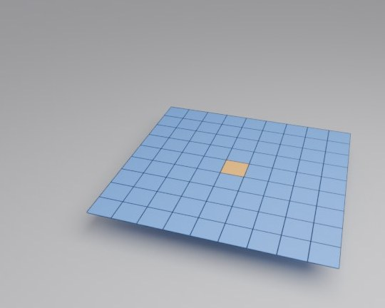
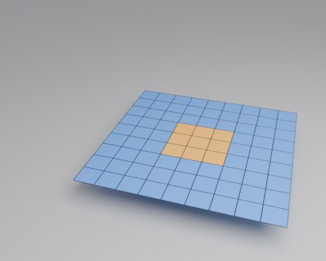

Bonus lesson
Select More/Less
Select More/Less grows or shrinks your selection one step at a time. It works in Edit Mode. The menu is Select › Select More/Less. In the manual, More is Ctrl-NumpadPlus and Less is Ctrl-NumpadMinus.


More and Less
Start with at least one vertex, edge or face selected. More expands the selection. Less shrinks it. The manual notes that if only one element is selected in any selection mode, Less will deselect it.
Face Step
With Face Step on, each use of the tool changes the selection size face by face. With it off, the step is based on vertices or edges, depending on which selection mode is active. The manual shows the same starting selection with Face Step off, with Face Step on, and in Edge select mode, and each gives a different result.
Next Active and Previous Active
Select › Select More/Less also has Next Active (Shift-Ctrl-NumpadPlus) and Previous Active (Shift-Ctrl-NumpadMinus). Next Active uses the selection history to pick the next vertex, edge or face from the surrounding topology. It works out the next selection from the previous two selections. Previous Active removes only the last selected element.
Read the manual page on Select More/Less.
Try it
This exercise is our own suggestion and has not been run step by step in the GUI. Add a Grid, enter Edit Mode and switch to Face select mode. Click one face in the middle. Choose Select › Select More/Less › More a few times and watch the selection grow. Then choose Less to shrink it. Use Ctrl+Z to undo.